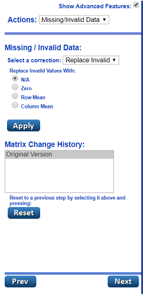
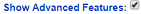
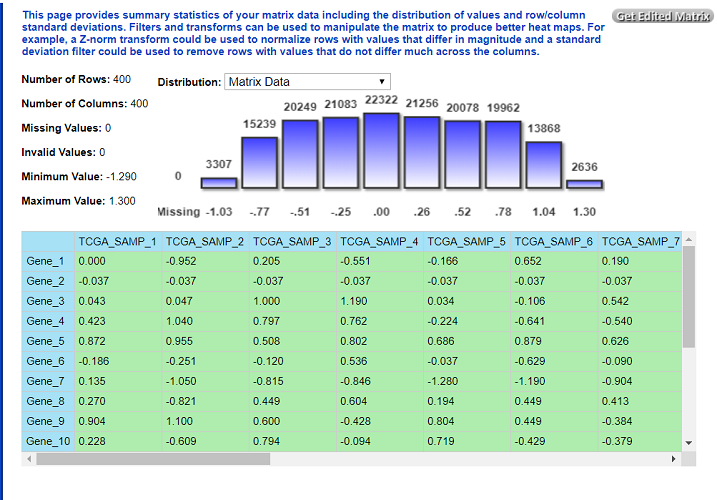
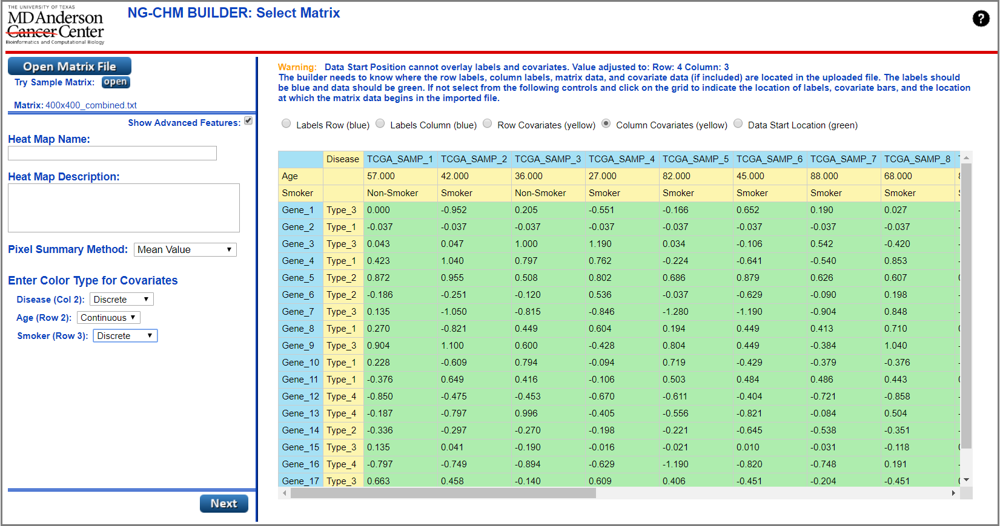
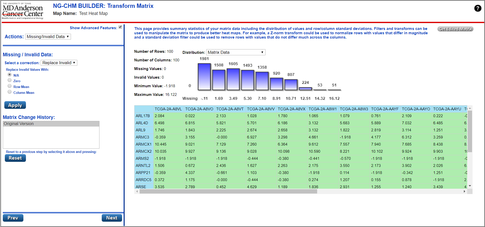
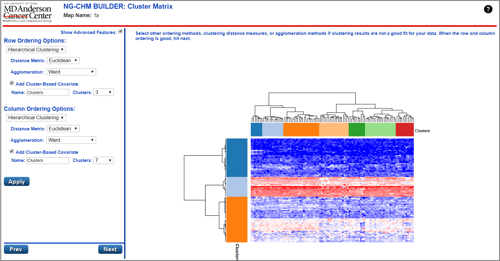
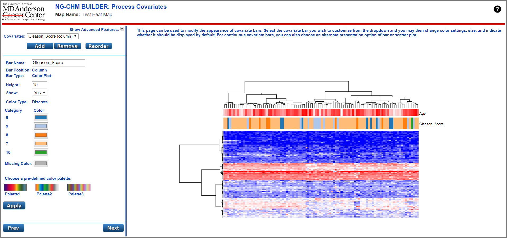
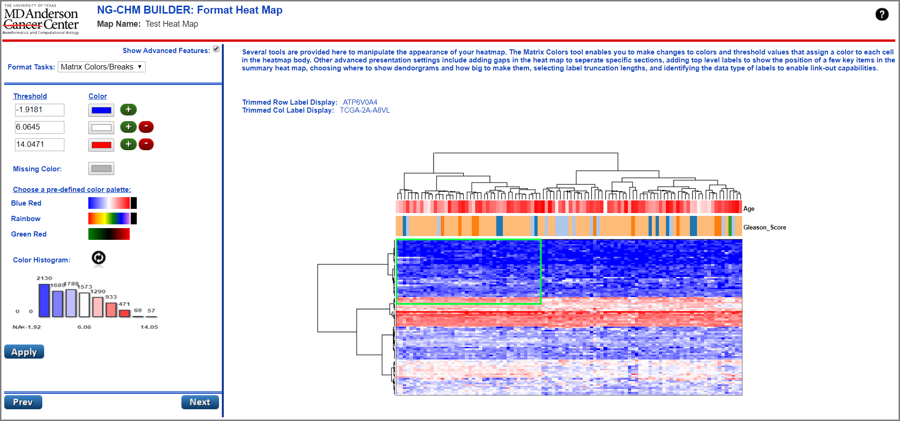
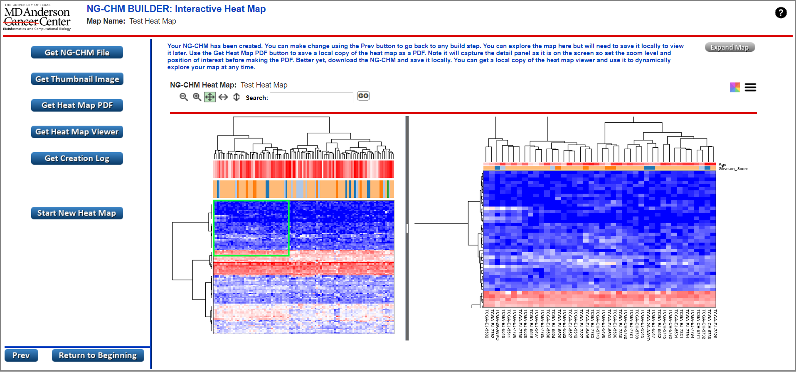

NG-CHM Builder Help
NG-CHM Builder Help
The NG-CHM Heat Map Builder provides a graphical user interface for users to easily construct heat maps from their own matrix data. The interface presents a step-by-step process that takes the user from the selection of an input matrix to the presentation of a newly created heat map in an embedded NG-CHM Heat Map Viewer. The heat map may then be saved as a portable .NGCHM file, which may be viewed in the NG-CHM File Viewer application, and/or saved as a PDF.
The NG-CHM Heat Map builder breaks the process of constructing a fully-functioning interactive heat map into a series of steps, a data entry screen for each, that walk the user through the construction process:
Each screen of the NG-CHM Heat Map Builder contains two panels: The Configuration Panel on the left side of the screen and the Results Panel on the right.
The Configuration Panel.
 |
An NG-CHM Builder screen's configuration panel provides the user with options for the current step in the heat map building process. Each configuration panel contains a series of configuration controls (e.g. text entry, drop-down list, checkbox, etc...))to make configuration changes to the map. Within this panel the user may make configuration changes to their heat map, apply those changes, and navigate to the next screen. Backwards navigation to the previous screen is also possible. The details for all of the configuration controls can be found in the sub-sections (below) for each of the screens in the application.  The available configuration options for all data-entry panels in the application are broken into those features that are advanced and those that are basic in nature. In order to provide a clean interface for beginners as well as a more full featured one for advanced users, the Configuration Panel of each page displays a check-box allowing the user to expand/contract the options displayed in the panel. More advanced configuration options will only be displayed when the box is checked. |
The Results Panel.
The Results Panel, located on the right side of the screen, allows the user to see the results of changes applied during data entry. In this way a user may iterate within each screen, making and applying changes to get the best result before moving on to the next screen.

A short video tutorial to introduce the various capabilities and controls of the NG-CHM GUI Builder: TBD

The first step in building a heat map with the NG-CHM Builder is to select a matrix file for the heat map. On this screen the user can open their own file or choose to use a sample file provided with the application. Users may select a matrix and enter information for the new heat map by making selections and entries on the configuration panel.
NG-CHM heat maps require a tab delimited text file containing a matrix of data. The file must have row and column headers with labels that identify the content of the rows/columns and numeric values in the remainder of the matrix. Use the Open Matrix File button to load your matrix. If you don't have a matrix and want to try the application, the Sample Matrix open button may used to open a matrix file that will allow you to explore the features of the application.
Once a matrix file has been selected and opened, the Results Panel will be populated with data from the matrix. The Results Panel on this particular screen of the NG-CHM Builder application differs from other screens in the application in that the user can perform some select configuration tasks in the panel. These allow the user to select locations in the matrix where labels and data are located. Matrix data may begin in a position other than (1,1) in the matrix. Users may select the location of the label row and label column as well as pick a starting point for the matrix data by selecting from the radio buttons above the matrix and then clicking on the displayed matrix itself to make a selection. The colors blue (labels) and green (data) are displayed on the matrix to show your selections. The system default is row 1 column 1 for row and column labels, respectively, and (2,2) for matrix data start location.
Advanced users may choose the option to open a file that contains embedded covariate file data located within the matrix itself. In these cases the covariate data will be represented by rows and columns in the matrix. Controls on the results panel allow the user to select the locations of covariate bars on each axis. The color yellow is displayed on the matrix to show covariate selections. If covariate bars are selected within the matrix, the configuration panel will be expanded to allow users to select the color type (discrete/continuous) for each bar.
| Configuration Item | Description of Function |
|---|---|
| Open Matrix File | Press this button to select a data matrix file and begin building the heat map. |
| Try Sample Matrix | Press this button to select the sample data matrix. This matrix can be used to explore all of the features of the NG-CHM Builder. By proceeding through the screens and making configuration selections, you may construct the sample heat map and view it interactively. |
| Show Advanced Features | Check this box to expand builder options to show advanced system features. Uncheck the box to see a streamlined set of standard builder options. |
| Heat Map Name | Enter a Name for the heat map. This name will be displayed in the NG-CHM Viewer and be used as the file name for the map when downloaded. |
| Heat Map Description | Enter a free-form description for the heat map. This description will appear in the NG-CHM Viewer. |
| Pixel Summary Method * | Select a Pixel Summary Method (Mean Value, Sample Value, or Predominant Value). This method will be used to summarize values for pixel representation on the summary panel (left side) of the NG-CHM Viewer. |
| Covariate Color Type * | Select a color type (discrete or continuous) for the titled covariate bar. |
| Labels Row | Select this button to choose the labels row of the matrix by then clicking a row on the grid below. The selected row will be colored blue in the matrix display. |
| Labels Column | Select this button to choose the labels column of the matrix by then clicking a column on the grid below. The selected column will be colored blue in the matrix display. |
| Row Covariates * | Select this button to choose any row covariates embedded in the matrix by then clicking column(s) on the grid below. Selected column(s) will be colored yellow in the matrix display. |
| Column Covariates * | Select this button to choose any column covariates embedded in the matrix by clicking rows(s) on the grid below. Selected rows(s) will be colored yellow in the matrix display. |
| Data Start Location | Select this button to choose choose the row/column position where matrix data begins by then clicking a cell on the grid below. All rows and columns to the right and below this position will be colored green in the matrix display. |
| Next | Press this button to proceed to the next screen: Transform Matrix. |
| * - denotes advanced feature configuration options. | |
Once a matrix has been selected and all required data entered, the user may move on to the next step in the NG-CHM Builder heat map creation process: Transform Matrix.

Once a matrix has been selected, the user may perform a number of different operations to transform and filter the data in the matrix prior to heat map construction. Filters and transforms can be used to manipulate the matrix to produce better heat maps. For example, a Z-norm transform could be used to normalize rows with values that differ in magnitude and a standard deviation filter could be used to remove rows with values that do not differ much across the columns. The Transform Matrix screen presents these options to the user and allows them to perform a sequence of changes to modify the contents of the input matrix.
The configuration panel begins with a drop-down selection that contains options for the different types of actions that may be performed in transforming/filtering a matrix. Each of these options will reveal a different panel containing configuration controls for that action. A user may select a transform method, enter values (where necessary) for the transform, and execute that modification to the matrix. As each transform is applied a line describing the change is added to a Matrix Change History list. At any point in the process of transforming the matrix, the user may restore the modified matrix to a previous step by clicking on a change in the history list and then clicking the "reset" button.
The Results panel on the Transform Matrix screen presents an image of the top left corner of the matrix as changes are being applied. This panel also provides summary statistics of your matrix data including the distribution of values and row/column standard deviations. In this way, the user may visually confirm that the transforms and filters being applied are producing the expected results.
| Configuration Item | Description of Function |
|---|---|
| Show Advanced Features | Check this box to expand builder options to show advanced system features. Uncheck the box to see a streamlined set of standard builder options. |
| Transform Actions | Select a type for the Transformation action that you wish to perform. The selection of each action will display a different panel, below the drop-down, for that specific action. Available actions include: Missing/Invalid Data, Filter Data, Transform Data, and Matrix Operations. |
| Select a Correction | Select a missing/invalid data correction type to apply to the matrix. Available correction types include replacing invalid data and filling-in missing data. |
| Replace Invalid Values | Select this button to choose the value to be used in replacing invalid values. Available replacement values include: N/A, Zero, Row Mean, and Column Mean. |
| Replace Missing Values | Select this button to choose the value to be used in replacing missing values. Available replacement values include: N/A, Zero, Row Mean, Column Mean, Row Minimum Value, and Column Minimum Value. |
| Select a Filter | Select a filter type to apply to the matrix. Available filter types allow filtering by: Standard Deviation, Data Range, and Missing Values. |
| Std. Deviation Filter | Select this button to choose a Standard Deviation (SD) filtering method from the available options. SD filters may be applied to rows or columns in the matrix. Available SD filters will perform the following actions on matrix rows/cols for a user-supplied value (X): Remove where SD less than X, Keep X% with highest SD, Keep X rows/cols where SD is highest. |
| Range Filter | Select this button to choose a Range filtering method from the available options. Range filters may be applied to rows or columns. Available Range filters will remove rows/cols for a user-supplied value (X) where: All data values are less than X, All data values are greater than X, A single value is less than X, A single value is greater than X, or keep values where value + 1 is greater than X. |
| Missing Data Filter | Select this button to choose a Missing Data filtering method from the available options. Missing data filters may be applied to rows or columns in the matrix. Available Missing Data filters will remove rows/cols for a user-supplied value (X) where: % of missing values exceeds X or number of missing values exceeds X. |
| Select a Transform | Select a transform type to apply to the matrix. Available transform types include: Logarithmic, Mean Center, Z Normalization, and Arithmetic. |
| Logarithmic Transform | Select this button to choose a Logarithmic transformation method from the available options. These options include: Log Base 10, Log Base 2, and Natural Log. |
| Mean Center Transform | Select this button to choose row or column for Mean Centering. |
| Z-Norm Transform | Select this button to choose row or column for Z-Normalization. |
| Arithmetic Transform | Select this button to choose an Arithmetic transformation method from the available options. Available Arithmetic transforms will perform the following actions for a user-supplied value (X): Add X to all values; Subtract X from all values; Multiply all values by X; Divide all values by X. |
| Select a Matrix Operation Method * | Select this button to choose a matrix operation type to apply to the matrix. Available matrix operation types include: Transpose and Correlate Matrix. |
| Transpose Method * | Select this button to transpose the matrix. |
| Correlation Matrix Method * | Select this button to choose a Correlation method from the available options. These include: Correlate by row with self; Correlate by column with self; Correlate by row with a selected matrix; Correlate by column with a selected matrix. |
| Apply Button | Press this button to apply all transformation selections and reload the matrix. |
| Reset Button | Press this button to restore the matrix to a previous step, or back to the original version, by selecting a row from the Matrix Change History box above and pressing this button. |
| Prev Button | Press this button to return to the Select Matrix screen. |
| Next Button | Press this button apply any transform changes made and proceed to the Cluster Matrix screen. |
| Get Edited Matrix # | Press this button to download a matrix text file containing transformed data matrix. |
| * - denotes advanced feature configuration options. | |
Once all transformations have been applied to the original data matrix, the user may move on to the next step in the NG-CHM Builder heat map creation process: Cluster Matrix.

Once a matrix has been selected and transformed, the user may begin building the heat map. Indeed, the initial version of the heat map is built and displayed when the Cluster Matrix screen is loaded. The next step in the construction process is to apply an ordering method and cluster the matrix data. A user may choose to use original or random matrix order. Generally, hierarchical clustering is applied to rows, columns, or both.
Utilizing the configuration panel on the Cluster Matrix screen, the user may make the selections necessary to cluster the matrix. Drop-down controls are provided for Order Method, Distance Measure, and Agglomeration Method. Users may select the ordering method for rows and columns. Various distance measures and agglomeration methods can be selected for clustering rows and columns. Euclidian and Ward generally produce good results. NOTE: Clustering can take some time if the matrix is large.
If hierarchical ordering is selected, an advanced feature of the Cluster Matrix screen allows for the creation of cluster-based covariate bars for both the row and column axis. A cluster-based covariate bar will appear on the heat map with color breaks coinciding with the number of clusters that the user selects in the configuration panel for the bar. The screen shot of the Cluster Matrix screen (above) contains an example of cluster-based covariate bars.
The results panel of this screen contains a rendering of the Summary side of the actual NG-CHM Viewer application page. The summary heat map is visible along with any applied covariate bars and hierarchical dendrograms.
| Configuration Item | Description of Function |
|---|---|
| Show Advanced Features | Check this box to expand builder options to show advanced system features. Uncheck the box to see a streamlined set of standard builder options. |
| Ordering Options | Select the Ordering Method to be applied to the heat map matrix data rows and/or columns. Available ordering methods include: Hierarchical, Random, and Original. |
| Distance Metric | Select the Distance Metric to be applied to hierarchically clustered rows and/or columns. Available distance metrics include: Euclidean, Manhattan, Maximum, and Mikowski. |
| Agglomeration | Select the Agglomeration Method to be applied to hierarchically clustered rows and/or columns. Available agglomeration methods include: Average Linkage, Complete Linkage, Single Linkage, Ward, and McQuitty. |
| Add Cluster Based Covariate * | Check this box to add a cluster-based row and/or column covariate bar to the heat map. |
| Name * | Enter a display name for the cluster-based covariate bar. |
| Clusters * | Select the number of clusters to be included in the cluster-based covariate bar. |
| Apply Button | Press this button to apply any clustering changes, rebuild, and reload the displayed heat map. |
| Prev Button | Press this button to return to the Transform Matrix screen. |
| Next Button | Press this button apply any clustering changes made and proceed to the Process Covariates screen. |
| * - denotes advanced feature configuration options. | |
Once any desired clustering has been applied, the user may move on to the next step in the NG-CHM Builder heat map creation process: Process Covariates.

Covariate bars are generated by applying a covariate file to the heat map. They can contain information related to either rows or columns in the data matrix. Covariate bars contain discreet classification data (e.g. sub-type) or continuous data (e.g. age). Column covariate bars, appear in the NG-CHM Viewer at the top of the heat map. Row covariate bars to the left of the map. Discrete covariate bars are displayed as a color bar with different colors associated with each discrete category in the data. Continuous covariate bars can be displayed as a color bar, scatter plot, or bar plot with the color varying in shade between the upper and lower boundaries of the data.
The first step in processing a covariate bar in the NG-CHM builder is to select a covariate file and enter values for display Name, Position (data axis), Color Type (discrete/continuous). A covariate file can be a text or .XLS file. Each row in the file must contain 2 data values: A key value and a data value. These must be separated by a tab in a text file and reside in separate columns in an .XLS file. All key values must match labels found on the data matrix in the appropriate row/column. Once the bar has been added, the user may further configure the display of the bar.
Using controls located on the configuration panel of the Process Covariates screen, users may add, remove, and reorder covariate bars as well as modify the appearance of each covariate bar. Select the covariate bar you wish to customize from the Covariates drop-down and the user may then change color settings, size, display type, and whether it should be displayed. For continuous covariate bars, you can also choose an alternate presentation option of barplot or scatter plot. When either of these are selected, the user will be shown a panel containing controls specific to these bar representations.
The results panel of this screen contains a rendering of the Summary side of the actual NG-CHM Viewer application page. The summary heat map is visible along with any applied covariate bars and hierarchical dendrograms.
| Configuration Item | Description of Function |
|---|---|
| Show Advanced Features | Check this box to expand builder options to show advanced system features. Uncheck the box to see a streamlined set of standard builder options. |
| Covariates | Select an existing covariate bar, by name, to edit. |
| Add | Press this button to add a covariate bar to the heat map. An add covariate panel will be displayed allowing the user to upload a covariate to the heat map. |
| Remove | Press this button to remove a covariate bar from the heat map. A remove covariate panel will be displayed allowing the user to remove the bar from the heat map. |
| Reorder | Press this button to reorder the display of covariate bars on the heat map. A reorder covariate panel will be displayed allowing the user move covariate bars around, using graphical controls, to change their display order. |
| Select File Button | Displayed in the Add Covariate panel. Press this button to select a covariate file for the heat map. |
| Bar Name | Enter the label that you want to appear displayed with the covariate bar. |
| Position | Select the axis (row/column) upon which the covariate bar will appear in the heat map. |
| Bar Type * | Select a display type for the covariate bar. Bar Type may only be changed for continuous color type covariate bars. Available bar types include: color plot, bar plot, and scatter plot. |
| Height | Enter a value, between 1 and 99, for the display height of the covariate bar. |
| Show | Choose whether covariate bar will be displayed (or hidden) on the heat map. |
| Color Type | Select the color type (continuous/discrete) for the values in the covariate bar. |
| Color | Select a color, using a color picker dialog, for a given category on the covariate bar. A color picker will appear for each category in the covariate. |
| Missing Color | Select a color, using a color picker dialog, for missing values on the covariate bar. |
| Pre-defined Color Palette | Choose from 3 pre-defined color palettes for the covariate bar. |
| Lower Bound * | Select a lower boundary value for the scatter/bar plot range. This control only appears for continuous covariate bars for which the user has selected the bar type of Bar Plot or Scatter Plot. |
| Upper Bound * | Select an upper boundary value for the scatter/bar plot range. This control only appears for continuous covariate bars for which the user has selected the bar type of Bar Plot or Scatter Plot. |
| Foreground Color * | Select a foreground color, using a color picker dialog, for scatter/bar plot display. This control only appears for continuous covariate bars for which the user has selected the bar type of Bar Plot or Scatter Plot. |
| Background Color * | Select a background color, using a color picker dialog, for scatter/bar plot display. This control only appears for continuous covariate bars for which the user has selected the bar type of Bar Plot or Scatter Plot. |
| Apply Button | Press this button to apply any covariate changes, rebuild, and reload the displayed heat map. |
| Prev Button | Press this button to return to the Cluster Matrix screen. |
| Next Button | Press this button apply any covariate changes made and proceed to the Format Heat Map screen. |
| * - denotes advanced feature configuration options. | |
Once all covariate processing has been performed, the user may move on to the next step in the NG-CHM Builder heat map creation process: Format Heat Map.

The purpose of the Format Heat Map screen is to provide users with a set of tools, displayed in different sub-panels within the configuration panel, for formatting various aspects of heat map display. These tools include: Matrix Colors/Breaks, Heat Map Display, Labels and Attributes, and Heat Map Gaps. Each of the panels containing these tools may be toggled open using the Format Tasks drop-down at the top of the configuration panel.
The Matrix Colors tool enables changes to colors and threshold values that assign a color to each cell in the heat map body. The Heat Map Display tool allows users to change the visibility, size, color, and length of objects (e.g. dendrograms, labels, grids, etc...) displayed on the heat map. The Labels and Attributes tool permits the addition of label types for linkouts, top items, and heat map level attributes to the heat map. Finally, Heat Map Gaps (an advanced feature) allows users to place gaps into the heat map display based upon location or cluster.
The results panel of this screen contains a rendering of the Summary side of the actual NG-CHM Viewer application page. The summary heat map is visible along with any applied covariate bars, top items, gaps, and hierarchical dendrograms.
| Configuration Item | Description of Function |
|---|---|
| Show Advanced Features | Check this box to expand builder options to show advanced system features. Uncheck the box to see a streamlined set of standard builder options. |
| Format Tasks | Select the type of heat map formatting task that you wish to perform. Available types include: Matrix Colors/Breaks, Heat Map Display, Labels and Attributes, Heat Map Gaps |
| Threshold | Enter/Edit a value for a given matrix threshold. Sub-panel location: Matrix Colors/Breaks. |
| Color | Select a color, using a color picker dialog, for display of data points that fall within a given threshold in the matrix. Sub-panel location: Matrix Colors/Breaks. |
| Missing Color | Select a color, using a color picker dialog, for display of missing values in the matrix. Sub-panel location: Matrix Colors/Breaks. |
| Threshold Add Button | This green "plus" button can be pressed to add a new threshold below the selected item. Sub-panel location: Matrix Colors/Breaks. |
| Threshold Remove Button | This red "minus" button can be pressed to remove an existing threshold. Sub-panel location: Matrix Colors/Breaks. |
| Pre-defined Color Palette | Choose from 3 pre-defined color palettes for the matrix data display. Sub-panel location: Matrix Colors/Breaks. |
| Selection Color | Select a color, using a color picker dialog, for the display of the box that highlights selection location in the NG-CHM Viewer. Sub-panel location: Heat Map Display. |
| Gaps Color * | Select a color, using a color picker dialog, for the display any heat map gaps. Sub-panel location: Heat Map Display. |
| Grid Color | Select a color, using a color picker dialog, for the grid displayed on the detail side of the heat map. Sub-panel location: Heat Map Display. |
| Show Grid | Choose (YES/NO) whether a grid will be displayed on the detail side of the heat map. Sub-panel location: Heat Map Display. |
| Summary Display Width | Select a display percentage for the summary side of the heat map view. Sub-panel location: Heat Map Display. |
| Show Dendrogram | Select if and where the row/column dendrogram will be displayed in the heat map view (where applicable). Sub-panel location: Heat Map Display. |
| Dendrogram Height | Select the display height for the a row/column dendrogram (where applicable). Sub-panel location: Heat Map Display. |
| Maximum Label Length | Select the maximum displayed label length for row/column labels in the heat map view. Sub-panel location: Heat Map Display. |
| Trim Label Text | Select the location (beginning/middle/end) to abbreviate row/column labels that exceed the maximum label length. Sub-panel location: Heat Map Display. |
| Label Type | Select a label type for all row/column labels. Label type is used to link labels to active plug-ins defined for the heat map. Sub-panel location: Labels and Attributes. |
| Top Label Items * | Enter a comma-delimited string of row/column labels as top items. These items will be highlighted, for easy access, on the summary side of the heat map view. Sub-panel location: Labels and Attributes. |
| Heat Map Attributes * | Enter a comma-delimited list of colon-separated key/value pairs as additional attributes for this heat map. Sub-panel location: Labels and Attributes. |
| Gap Method * | Select a row/column gap method (by location or cluster) for gaps to be added to the the heat map. Sub-panel location: Heat Map Gaps. |
| Gaps By Location * | Enter a comma-delimited list of numeric gap locations. A row/column gap will be placed in the heat map at each of these locations. Sub-panel location: Heat Map Gaps. |
| # of Clusters * | Enter a numeric value for the the number of hierarchichal clusters to break the heat map up with gaps. Sub-panel location: Heat Map Gaps. |
| Gap Length * | Enter a numeric value for the width (in rows/columns) of all row/column gaps displayed in the heat map. Sub-panel location: Heat Map Gaps. |
| Apply Button | Press this button to apply any formatting changes, rebuild, and reload the displayed heat map. |
| Prev Button | Press this button to return to the Process Covariates screen. |
| Next Button | Press this button apply any formatting changes made and proceed to the Interactive Heat Map screen. |
| * - denotes advanced feature configuration options. | |
Once all heat map format changes have been applied, the user is ready to view their dynamic heat map in the NG-CHM Viewer and may move on to the final step in the NG-CHM Builder heat map creation process: Interactive Heat Map.

The final result of the NG-CHM Heat Map build process is the presentation of your completed heat map on the Interactive Heat Map screen. This screen leverages the NG-CHM Viewer application, with all of it's features, to display the heat map in a fully interactive presentation. The NGCHM Heat Map Viewer is a dynamic, graphical environment for exploration of clustered or non-clustered heat map data. For information on the features of the NG-CHM Viewer, please see the full documentation
The configuration panel for the NG-CHM Builder Interactive Heat Map screen provides a number of options for the user to leverage the heat map that they just constructed. You can explore the map here, but will need to save it locally or download a PDF to view it later. You can get a local copy of the heat map viewer and use it to dynamically explore your map at any time. Please refer to the Configuration Controls list (below) for a description of the features available for saving, printing, and generating images of your newly created heat map.
The results panel of this screen contains a fully-featured embedded version of the NG-CHM Viewer application. The user may interact with the heat map freely in this panel. It is also possible, using the Expand Map button, to enlarge the panel to full screen size to better work with your heat map.
| Configuration Item | Description of Function |
|---|---|
| Get NGCHM File | Press this button to download a portable .NGCHM file containing the heat map. This file may be opened in the stand-alone NG-CHM File Viewer application which may also be downloaded from this screen. |
| Get Heat Map PDF | Press this button to create a configurable PDF document for the heat map. This PDF is the best source for publication quality images of the heat map. |
| Get Heat Map Viewer | Press this button to download a .HTML file containing the NG-CHM File Viewer application. This application may be used to open saved .NGCHM files containing heat maps making any saved .NGCHM portable. |
| Get Creation Log | Press this button to generate a PDF document containing the creation log for this heat map. This log contains a listing of all of the configuration setting changes that were made during the creation of the heat map and may be used to recreate the map at a later date. |
| Get Thumbnail Image | Press this button to download a small .PNG image of the summary side of this heat map. This image may be used as a small 'overview' image for the map in publications or as a click-able thumbnail to be displayed on pages with embedded heat maps. |
| Start New Heat Map | Press this button to delete the current heat map and return to the Matrix Selection screen to create a new heat map. Please note that any entries for the current heat map will be lost. You may wish to save a .NGCHM for the map before proceeding. |
| Expand Map | Press this button to expand the size of the heat map results panel to full screen mode. |
| Collapse Map | Press this button to collapse the size of the heat map results panel back to normal size. |
| Prev Button | Press this button to return to the Format Heat Map screen. |
| Return to Beginning Button | Press this button to return to the Matrix Selection screen at the beginning of the heat map creation process. All settings for your current heat map will be retained. |